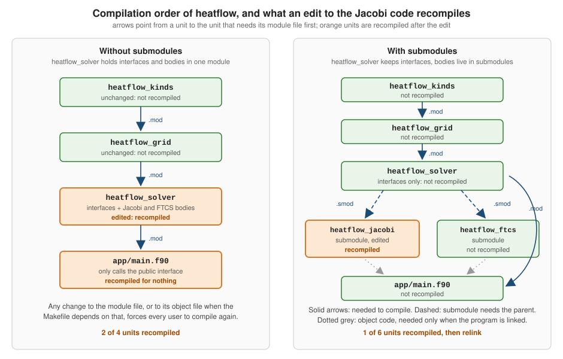

Modules and Submodules
|
This content was generated with the assistance of AI and should be verified against the official documentation before being relied on in production. |
This page is written against Fortran 2023 (ISO/IEC 1539-1:2023, J3/23-007r1) and was checked on 2026-10-18. Every
example was compiled warning-free with gfortran -std=f2023 -Wall -Wextra -pedantic -fimplicit-none -fcheck=all
(GNU Fortran 16.2) and run, and the submodule examples were also built and run with LLVM Flang 23; the output shown
is real output. Examples that are deliberately wrong, or that use a feature the installed compilers reject, are labelled
as such and show the real diagnostics. Modules and submodules are defined in clause 14 of the standard ("Program units"):
14.2.1 gives the module syntax, 14.2.2 the use statement and use association, and 14.2.3 submodules. Accessibility is
in 8.5.2 and 8.6.1, protected in 8.5.15, save in 8.5.16 and separate module procedures in 15.6.2.5.
A module is the unit in which modern Fortran packages data, named constants, types, interfaces and procedures, and
the only portable way to give a procedure an explicit interface without writing it twice. Everything in the running
example, heatflow, lives in modules: heatflow_kinds, heatflow_constants, heatflow_boundary, heatflow_grid,
heatflow_kernels, heatflow_solver, heatflow_config, heatflow_io and heatflow_capi. A submodule extends a
module with the bodies of procedures whose interfaces the module declares, so that implementation details can change
without touching the module file that every other unit compiles against. In heatflow_solver the interfaces live in the
module and the Jacobi and FTCS bodies in the submodules heatflow_jacobi and heatflow_ftcs. This page covers the
mechanics, the pitfalls, and the file and build-order consequences; the procedures themselves are in
Procedures, Functions and Subroutines, generic
interfaces and defined operators in
Interfaces, Generics and Operator Overloading,
the intrinsic modules in
Intrinsic Modules and iso_fortran_env, and
the build tools that order the compilation in
Building with Make, CMake and Meson and
Fortran Package Manager (fpm).
What a module is
A module (14.2.1) has a specification part and an optional module-subprogram part introduced by contains:
module name
! specification part: use, implicit none, accessibility, declarations, interfaces
contains
! module procedures
end module nameThe module name is global to the program (14.2.1, Note 1, and 19.2), so a program cannot contain two modules with the same name. The end module statement may repeat the
name (end module heatflow_grid), which the compiler checks (C1402).
| Entity | Notes | Where it goes |
|---|---|---|
Named constants and variables |
module variables have the |
specification part |
Derived types, enumerations |
type definitions and |
specification part |
Interface blocks, abstract interfaces, generics |
explicit interfaces for external code, generic names, defined operators |
specification part |
Namelist groups |
|
specification part |
Procedures |
|
after |
Separate module procedure bodies |
|
after |
A module specification part cannot contain a statement function, an entry statement or a format statement (C1403),
although all three may appear inside a module subprogram. implicit none written in the module specification part
applies to every module procedure, which is why implicit none (type, external) is the first statement after the
use statements in the heatflow modules. An empty contains is allowed (R1407), which is useful when a
build tool or a template inserts procedures later. A module may use other modules, but it may not reference itself directly or
indirectly (14.2.2); see Breaking cyclic dependencies with submodules.
A module can also be provided by something other than Fortran, and a module supplied by the processor is an intrinsic module (14.2.1). Procedures and types defined in an intrinsic module are not themselves intrinsic.
Access control: public, private and protected
Every identifier in a module has the public or private attribute (8.5.2). Without any statement the default is
public, which exposes every helper variable and procedure to every use. The recommended style, used throughout
heatflow, is to make the default private with a bare private statement and list the interface explicitly with
public. Only one public or private statement without a list is allowed per module (C873).
There are three ways to set accessibility:
-
an attribute on a declaration:
real(dp), private :: last_residual, orpublic/privateon atypestatement, which applies to the type name, not its components; -
an accessibility statement with a list:
public :: record_step, operator(.dot.), where the list may contain names and generic specifications such asassignment(=)andoperator(+)(8.6.1); -
a bare
privateorpublic, which sets the default for the whole specification part, including entities that are only use-associated into the module (see below).
The protected attribute (8.5.15) limits what other program units may do with a module variable or procedure pointer:
they may read it, but they cannot define it, pass it as an actual argument to an intent(out) or intent(inout) dummy
argument, or use it as the target of a pointer assignment (C859 and C860). Inside the module and its submodules the variable is assigned normally.
That makes protected the way to expose read-only state without writing a getter function for every variable. The
standard’s own example keeps a Celsius and a Fahrenheit value consistent by allowing writes only through a subroutine.
The next example combines all of this in a small module that keeps statistics for the heatflow solver loop. A protected public counter is readable
by users, a private scalar and a private allocatable array are hidden state, and three different scoping units (the
module procedures, an external subroutine and the main program) share that state.
module heatflow_stats
use, intrinsic :: iso_fortran_env, only: real64, int32
implicit none
private ! default accessibility for this module
public :: record_step, report_stats ! the public interface
integer, parameter, public :: dp = real64
integer(int32), protected, public :: steps_taken = 0_int32 ! readable, not writable outside
real(dp), private :: last_residual = huge(1.0_dp) ! hidden state
real(dp), allocatable, private :: history(:) ! hidden, allocated on first use
contains
subroutine record_step(residual)
real(dp), intent(in) :: residual
steps_taken = steps_taken + 1_int32
last_residual = residual
if (.not. allocated(history)) allocate (history(0))
history = [history, residual] ! automatic reallocation on assignment
end subroutine record_step
subroutine report_stats()
print '(a, i0, a, es10.3, a, i0)', 'steps=', steps_taken, ' last residual=', last_residual, &
' history size=', size(history)
end subroutine report_stats
end module heatflow_stats
subroutine run_some_steps()
use heatflow_stats, only: dp, record_step
implicit none
call record_step(1.0e-2_dp)
call record_step(4.0e-3_dp)
end subroutine run_some_steps
program access_and_state
use heatflow_stats, only: steps_taken, report_stats, record_step, dp
implicit none
external :: run_some_steps
call record_step(5.0e-1_dp)
call run_some_steps() ! another scoping unit sees the same module state
call report_stats()
print '(a, i0)', 'steps_taken read from the main program: ', steps_taken
end program access_and_stateOutput:
steps=3 last residual= 4.000E-03 history size=3
steps_taken read from the main program: 3Source: J3/23-007r1: 8.5.2 Accessibility attribute, 8.5.15 PROTECTED attribute and 14.2.1 Module syntax and semantics, Fortran Programming Language: Organising code with modules
The array history grows by the automatic reallocation of history = [history, residual] (see
Allocatable Arrays and Dynamic Memory); it
is private, so no other unit can resize or deallocate it. Three details of the access rules are worth remembering:
-
A bare
privatein a module also applies to entities that the module itself obtained byuseassociation. Inheatflow_statsthe kindsreal64andint32come fromiso_fortran_envand are therefore private, which is why the module declares its own publicdpinstead of expecting users to importreal64through it. -
An accessibility statement may name a procedure or type that is declared later in the same specification part. The attribute applies to the identifier, not to a position in the text.
-
A public procedure may have a private type as the type of a dummy argument or a function result. Callers can pass and store such values but cannot name the type; this is the usual way to make an opaque handle. Making the components of a type private is a separate question, covered in Derived Types.
GNU Fortran has the option -fmodule-private which makes every module’s default private as if each had a bare private;
the Fortran option list of its manual documents it under the dialect options. Prefer writing private in the source: a
program that depends on a compiler flag for its meaning breaks when it is built by another tool.
The following program is deliberately non-conforming. It shows the diagnostics GNU Fortran produces when the main program
assigns to a protected variable and when it refers to a private entity of the module.
! INTENTIONALLY NON-CONFORMING: shows the diagnostics for misuse of PROTECTED and PRIVATE.
module heatflow_stats
implicit none
private
public :: steps_taken
integer, protected :: steps_taken = 0
integer :: hidden = 7 ! private through the module default
end module heatflow_stats
program misuse
use heatflow_stats
implicit none
steps_taken = 10 ! error: protected, not definable here
print *, hidden ! error: not accessible by use association
end program misuseDiagnostics from gfortran -std=f2023 -Wall -Wextra -pedantic -fimplicit-none -fcheck=all, which stops at the first
compilation error in the file:
02_protected_and_private_errors.f90:14:17:
14 | print *, hidden ! error: not accessible by use association
| 1
Error: Symbol 'hidden' at (1) has no IMPLICIT type
02_protected_and_private_errors.f90:13:3:
13 | steps_taken = 10 ! error: protected, not definable here
| 1~~~~~~~~~~~
Error: Variable 'steps_taken' is PROTECTED and cannot appear in a variable definition context (assignment) at (1)Source: J3/23-007r1: C859 in 8.5.15 PROTECTED attribute and 14.2.2 The USE statement and use association
The hidden diagnostic is the characteristic symptom of a private entity: since hidden is not accessible by use
association, the compiler sees an undeclared name, and under implicit none the message is "no IMPLICIT type" rather
than "private". Searching for that message is the first thing to do when a name that clearly exists in a module is not
found. When a diagnostic of this kind appears in code that compiled before, check whether somebody added a bare private.
The use statement: only, renaming and operators
use (14.2.2) makes the public entities of a module accessible: named data objects, nonintrinsic types, procedures,
abstract interfaces, generic identifiers and namelist groups. A use statement is itself a reference to the
module: its public part must already be available when the statement is processed, which is why the module has to be compiled first.
The general form has two spellings:
use [[, module-nature] ::] module-name [, rename-list]
use [[, module-nature] ::] module-name, only: [only-list]A rename is local-name => use-name, and for defined operators operator(.local.) => operator(.used.). An entry
of an only list is a generic specification (a generic name, operator(...) or assignment(=)), a plain name
(which must be nongeneric, C1410), or a rename. Every name in the statement must be public in the module (C1409). A defined
operator that is a type-bound generic cannot be renamed or listed in only (C1407, C1408); you get it by importing the
type. Several use statements for the same module may appear in one scoping unit; if one has no only, all public entities are accessible,
and otherwise the accessible set is the union of the only lists. A name may be imported twice under two different
local names (Note 3 in 14.2.2).
The next example uses two modules that both export a procedure named prod with different meanings, and shows
the three forms: no only (everything), only with a rename, and a renamed defined operator.
module stats_lib
implicit none
private
public :: prod, operator(.dot.)
interface operator(.dot.)
module procedure dot_vec
end interface
contains
pure function prod(x) result(r) ! product of all elements
real, intent(in) :: x(:)
real :: r
r = product(x)
end function prod
pure function dot_vec(a, b) result(r)
real, intent(in) :: a(:), b(:)
real :: r
r = dot_product(a, b)
end function dot_vec
end module stats_lib
module math_lib
implicit none
private
public :: prod, tau
real, parameter :: tau = 6.2831855
contains
pure function prod(a, b) result(r) ! same name, different meaning
real, intent(in) :: a, b
real :: r
r = a*b
end function prod
end module math_lib
program use_only_rename
use math_lib ! everything public: prod, tau
use stats_lib, only: sprod => prod, operator(.inner.) => operator(.dot.)
implicit none
real :: v(3) = [1.0, 2.0, 3.0]
print '(a, f0.1)', 'math_lib prod(2,3) = ', prod(2.0, 3.0)
print '(a, f0.1)', 'stats_lib sprod(v) = ', sprod(v)
print '(a, f0.1)', 'v .inner. v = ', v .inner. v
print '(a, f0.4)', 'tau = ', tau
end program use_only_renameOutput:
math_lib prod(2,3) = 6.0
stats_lib sprod(v) = 6.0
v .inner. v = 14.0
tau = 6.2832Source: J3/23-007r1: 14.2.2 The USE statement and use association (R1409 to R1412 and Note 6), Fortran Programming Language: Organising code with modules
Notes on this example:
-
use math_libhas noonlyclause, soprodandtauare both accessible, andprodmeans the two-argument function. The entity fromstats_libis reachable only assprod, because theonlylist imported it under that local name. -
use stats_lib, only: sprod => prodimports exactly one entity ofstats_lib; the.dot.operator is imported with the local name.inner.. The new operator name is a defined operator, written with dots and letters only. -
The compiler does not report a conflict at the
usestatements. A name clash is an error only when the clashing identifier is referenced, as the next example shows. If the two names denote the same ultimate entity, for example because both modules obtained it from a third module, there is no clash at all.
GNU Fortran can warn about every use without only with -Wuse-without-only (it is not part of -Wall):
03_use_only_rename.f90:35:7:
35 | use math_lib ! everything public: prod, tau
| 1
Warning: USE statement at (1) has no ONLY qualifier [-Wuse-without-only]The following program is deliberately non-conforming: the two use statements without only are both legal, but the
reference to prod is ambiguous.
! INTENTIONALLY NON-CONFORMING: two different entities with the same name are referenced.
module stats_lib
implicit none
contains
function prod(x) result(r)
real, intent(in) :: x(:)
real :: r
r = product(x)
end function prod
end module stats_lib
module math_lib
implicit none
contains
function prod(a, b) result(r)
real, intent(in) :: a, b
real :: r
r = a*b
end function prod
end module math_lib
program clash
use stats_lib
use math_lib ! legal: the clash only matters if the name is used
implicit none
print *, prod(2.0, 3.0) ! error: ambiguous reference
end program clashDiagnostic:
04_name_clash_error.f90:26:16:
26 | print *, prod(2.0, 3.0) ! error: ambiguous reference
| 1
Error: Name 'prod' at (1) is an ambiguous reference to 'prod' from module 'stats_lib'The standard recommends only for a maintenance reason (C.10.2.2): with an only list every accessed entity names its
source module in the unit that uses it, so nobody has to search other files to find where it is defined. It also keeps a
change in an imported module, such as a new public name that collides with a local one, from silently changing
a program that does not use it. The same annex warns against mixing use with implicit typing, because a new public name in the module can
change the type of an implicitly typed variable; with implicit none everywhere this cannot happen.
Two more rules of use association matter in practice:
-
A use-associated variable is considered declared and a use-associated entity is considered defined, so a
usehas to precede the declarations that need it, and the local identifier of a use-associated entity cannot be given attributes again in the using unit. The exceptions arepublic/private,asynchronousandvolatile(14.2.2). In particular a use-associated name cannot appear in acommonorequivalencestatement (Note 4). -
Use association is transitive: if module
cusesbandbusesa, whatccan see ofadepends on whatbmakes public. Entities ofathat are notprivateinbare re-exported.
Re-exporting: facade modules
Because a bare private also governs use-associated names, a module can re-export a chosen subset of what it uses. A
facade module gives users a single use heatflow while the project keeps small modules internally. The facade below
imports two modules without only, makes everything private by default and then publishes a curated list; the kind ip
is used internally but not exported.
module heatflow_kinds_demo
use, intrinsic :: iso_fortran_env, only: real64, int32
implicit none
private
public :: dp, ip
integer, parameter :: dp = real64
integer, parameter :: ip = int32
end module heatflow_kinds_demo
module heatflow_constants_demo
use heatflow_kinds_demo, only: dp
implicit none
private
public :: default_alpha
real(dp), parameter :: default_alpha = 1.0_dp
end module heatflow_constants_demo
! The facade: users write "use heatflow_demo" and get a curated set of names.
module heatflow_demo
use heatflow_kinds_demo ! brings dp, ip
use heatflow_constants_demo ! brings default_alpha
implicit none
private ! default: nothing is re-exported ...
public :: dp, default_alpha, describe ! ... except what is listed (ip stays internal)
integer(ip), parameter :: version = 1_ip
contains
subroutine describe()
print '(a, i0, a, f0.2)', 'facade v', version, ' default_alpha=', default_alpha
end subroutine describe
end module heatflow_demo
program facade
use heatflow_demo
implicit none
real(dp) :: alpha
alpha = 2.0_dp*default_alpha
call describe()
print '(a, f0.2)', 'alpha = ', alpha
end program facadeOutput:
facade v1 default_alpha=1.00
alpha = 2.00Source: J3/23-007r1: 8.6.1 Accessibility statement (R830 to R831 and the default accessibility rules)
The J3/23-007r1 text of 8.6.1 also lets an accessibility statement name a module (C874 to C876) so that, for example,
private m1 makes everything accessed from m1 private while public :: m_type re-exports one type
(Note 2 in 8.6.1). That form is not accepted by either installed compiler. The following fragment follows the idea of that note and is shown with the real diagnostics of GNU Fortran 16.2 and LLVM Flang 23; it is
not a working program on those compilers, so use use m1, only: m_type followed by a plain private instead, as in the
facade above.
! Re-export only one name from a module by making the module name itself private (see 8.6.1).
module m1
implicit none
integer, parameter :: m_type_kind = 4
type :: m_type
integer :: id = 0
end type m_type
integer :: other_var = 5
end module m1
module m2
use m1
implicit none
private m1
public :: m_type, make
contains
function make(i) result(t)
integer, intent(in) :: i
type(m_type) :: t
t%id = i + other_var ! other_var is usable here, but is not re-exported
end function make
end module m2
program reexport
use m2
implicit none
type(m_type) :: t
t = make(10)
print '(a, i0)', 't%id = ', t%id
end program reexport06b_private_module_name.f90:14:12:
14 | private m1
| 1
Error: PRIVATE attribute applied to MODULE m1 at (1)
06b_private_module_name.f90:25:7:
25 | use m2
| 1
Fatal Error: Cannot open module file 'm2.mod' for reading at (1): No such file or directory
compilation terminated.error: Semantic errors in 06b_private_module_name.f90
06b_private_module_name.f90:14:11: error: No explicit type declared for 'm1'
private m1
^^Intrinsic and non-intrinsic modules
An intrinsic module is provided by the processor (iso_fortran_env, iso_c_binding, ieee_arithmetic,
ieee_exceptions, ieee_features; see
Intrinsic Modules and iso_fortran_env).
A user can write a module with the same name as an intrinsic one, so the use statement takes an optional module nature
(R1410):
-
use, intrinsic :: iso_fortran_envaccesses the intrinsic module and it is an error if the name is not that of one (C1404); -
use, non_intrinsic :: iso_fortran_envaccesses the user’s module and it is an error if the name is not that of a nonintrinsic module (C1405); -
a
usewith no nature accesses the nonintrinsic module when both exist, so a user module quietly shadows the intrinsic one; -
one scoping unit cannot reference both an intrinsic and a nonintrinsic module of the same name (C1406).
Always write use, intrinsic :: for the standard modules, so that a stray iso_fortran_env.f90 in a vendored
library cannot change the meaning of the program. The example defines a user module that shadows iso_fortran_env and
then shows each nature in its own scoping unit.
! A user module that happens to share its name with an intrinsic module.
module iso_fortran_env
implicit none
integer, parameter :: dp = kind(1.0d0)
character(len=*), parameter :: origin = 'user module'
end module iso_fortran_env
subroutine with_intrinsic()
use, intrinsic :: iso_fortran_env, only: real64, compiler_version
implicit none
print '(a, i0)', 'intrinsic: real64 = ', real64
print '(a)', 'intrinsic: compiler_version() is available: ' // merge('yes', 'no ', len(compiler_version()) > 0)
end subroutine with_intrinsic
program nature
use, non_intrinsic :: iso_fortran_env, only: dp, origin
implicit none
external :: with_intrinsic
print '(a, i0, 2a)', 'non_intrinsic: dp = ', dp, ', origin = ', origin
call with_intrinsic()
end program natureOutput:
non_intrinsic: dp = 8, origin = user module
intrinsic: real64 = 8
intrinsic: compiler_version() is available: yesSource: J3/23-007r1: 14.2.2 The USE statement and use association (R1410, C1404 to C1406), GNU Fortran manual: Options to request or suppress errors and warnings
The -fintrinsic-modules-path dir option of GNU Fortran (and LLVM Flang, which has the same spelling) says where the compiler’s own
pre-compiled intrinsic module files are found, which matters only for unusual installations or cross compilers.
The nature keywords arrived with Fortran 2003, together with the intrinsic modules iso_fortran_env
and iso_c_binding.
Module variables, save and common blocks
A variable declared in the specification part of a module is a global variable with a controlled name: every program unit that uses
the module sees the same storage. Since Fortran 2008 the standard says plainly that a variable declared in the scoping
unit of a main program, module or submodule implicitly has the save attribute (8.5.16), so it keeps its value, its
allocation status and its association status for the whole execution, however many times the procedures that use it are
entered. Writing save explicitly is permitted and harmless; it was needed in older code where a module variable could
become undefined when no active unit referenced the module. In heatflow_stats above, steps_taken, last_residual and
history persist across the three scoping units that call record_step.
Module variables replace the common block (8.10.2), which shares storage by position instead of by name and
type, requires the same layout in every unit that uses it and can silently misalign. A named common block is
covered only in
Legacy Features and Modernization. The
comparison favours modules on every point:
| Aspect | Module variable | common block |
|---|---|---|
Identity |
shared by name and type, checked by the compiler |
shared by storage position; layouts can disagree between units |
Initialization |
a declaration initializer |
only in a |
Accessibility |
|
none |
Allocatable, pointer, derived type |
any |
restricted: allocatable objects are not allowed, and |
Interoperability |
|
|
Global mutable state still has costs: it hides dependencies between procedures, it makes a procedure impure, and it
makes concurrent use unsafe, because a procedure that assigns to a module variable cannot be pure and cannot be called from a
do concurrent body that has no locality specifier for it (see
Procedures, Functions and Subroutines). Prefer
module constants (parameter) and pass state through derived types such as grid_t and solver_t; keep module
variables for genuinely global quantities, such as a logging unit or a counter that is read through a protected
variable.
A protected pointer may not have its association changed outside the module (C860), but nothing stops a user from
modifying the target through the pointer unless the target is itself protected; the attribute protects the association,
not the whole data structure behind it.
Submodules and separate module procedures
A module that contains its procedure bodies has a drawback that grows with the project: the compiler writes information about the module for its users, and a build tool that treats that file as a dependency has to decide when its users must be compiled again. The cure is to separate interface from implementation:
-
the module declares the interface of a separate module procedure with an interface body that begins with the keyword
module(15.4.3.2, 15.6.2.5); -
a submodule (14.2.3),
submodule (parent) name, contains the bodies: either with the whole header repeated,module subroutine smooth(...), or with onlymodule procedure smooth, in which case the characteristics come from the interface body (15.6.2.5); -
users
usethe module and never see the submodule. Only the interface body needs to be public (15.4.3.2): a separate module procedure is accessible by use association if and only if its interface body is declared in the specification part of a module and is public.
A submodule has a host, given by the parent-identifier (R1418): submodule (heatflow_smooth) extends a module, and
submodule (heatflow_smooth:smooth_impl) extends the submodule smooth_impl of that module. Together they form a tree with a module at the
root (14.2.3). The submodule name by itself is not a global identifier: the identifier is the ordered pair
(ancestor module, submodule), so two different modules can each have a submodule named impl.
A submodule accesses its host’s entities, including the host’s private ones, by host association; it
may declare more separate module procedure interfaces, which are then visible only to it and its descendants.
interfaces: smooth, grid_energy
private variable: calls"] --> B["submodule smooth_impl
bodies of smooth and grid_energy
declares interface of sweep"] B --> C["submodule smooth_kernel
body of sweep"] D["program use_smooth"] -.->|"use heatflow_smooth"| A
The example below is the smallest realistic version of the heatflow solver split: a module with two public separate
module procedures and a private counter, a submodule that implements both (one with the full header and one with
module procedure), declares a third interface sweep and increments the counter by host association, and a
submodule of that submodule that implements sweep. A main program uses the module. The four files are
compiled in this order and linked:
module heatflow_smooth
use, intrinsic :: iso_fortran_env, only: real64, int32
implicit none
private
public :: dp, smooth, grid_energy, sweeps_done
integer, parameter :: dp = real64
integer(int32) :: calls = 0_int32 ! private: only this module and its submodules see it
interface
! Separate module procedures: interface here, bodies in submodules.
module subroutine smooth(u, nsweeps, residual)
real(dp), intent(inout) :: u(:, :)
integer, intent(in) :: nsweeps
real(dp), intent(out) :: residual
end subroutine smooth
module function grid_energy(u) result(e)
real(dp), intent(in) :: u(:, :)
real(dp) :: e
end function grid_energy
end interface
contains
integer function sweeps_done()
sweeps_done = calls
end function sweeps_done
end module heatflow_smoothsubmodule (heatflow_smooth) smooth_impl
implicit none
interface
! Declared in this submodule, so it is private to it and to its descendants.
module subroutine sweep(u, unew, residual)
real(dp), intent(in) :: u(:, :)
real(dp), intent(out) :: unew(:, :)
real(dp), intent(out) :: residual
end subroutine sweep
end interface
contains
module subroutine smooth(u, nsweeps, residual) ! full header repeated
real(dp), intent(inout) :: u(:, :)
integer, intent(in) :: nsweeps
real(dp), intent(out) :: residual
real(dp), allocatable :: unew(:, :)
integer :: k
allocate (unew, mold=u)
residual = 0.0_dp
do k = 1, nsweeps
call sweep(u, unew, residual)
u(2:size(u, 1) - 1, 2:size(u, 2) - 1) = unew(2:size(u, 1) - 1, 2:size(u, 2) - 1)
calls = calls + 1 ! host association reaches the private variable
end do
end subroutine smooth
module procedure grid_energy ! header omitted: taken from the interface body
e = sum(u*u)
end procedure grid_energy
end submodule smooth_implsubmodule (heatflow_smooth:smooth_impl) smooth_kernel
implicit none
contains
module subroutine sweep(u, unew, residual)
real(dp), intent(in) :: u(:, :)
real(dp), intent(out) :: unew(:, :)
real(dp), intent(out) :: residual
integer :: i, j
unew = u
residual = 0.0_dp
do j = 2, size(u, 2) - 1
do i = 2, size(u, 1) - 1
unew(i, j) = 0.25_dp*(u(i - 1, j) + u(i + 1, j) + u(i, j - 1) + u(i, j + 1))
residual = max(residual, abs(unew(i, j) - u(i, j)))
end do
end do
end subroutine sweep
end submodule smooth_kernelprogram use_smooth
use heatflow_smooth, only: dp, smooth, grid_energy, sweeps_done
implicit none
real(dp) :: u(5, 5), residual
u = 0.0_dp
u(3, 3) = 100.0_dp
print '(a, f10.3)', 'energy before = ', grid_energy(u)
call smooth(u, 10, residual)
print '(a, f10.3, a, es10.3)', 'energy after = ', grid_energy(u), ' residual = ', residual
print '(a, i0)', 'sweeps done = ', sweeps_done()
end program use_smoothBuild and run (GNU Fortran 16.2, flags as for every example):
gfortran -std=f2023 -Wall -Wextra -pedantic -fimplicit-none -fcheck=all -c 08a_heatflow_smooth.f90
gfortran -std=f2023 -Wall -Wextra -pedantic -fimplicit-none -fcheck=all -c 08b_smooth_impl.f90
gfortran -std=f2023 -Wall -Wextra -pedantic -fimplicit-none -fcheck=all -c 08c_smooth_kernel.f90
gfortran -std=f2023 -Wall -Wextra -pedantic -fimplicit-none -fcheck=all -c 08d_main.f90
gfortran 08a_heatflow_smooth.o 08b_smooth_impl.o 08c_smooth_kernel.o 08d_main.o -o smooth
./smoothenergy before = 10000.000
energy after = 4.883 residual = 1.562E+00
sweeps done = 10Source: J3/23-007r1: 14.2.3 Submodules and 15.6.2.5 Separate module procedures, Fortran Programming Language: Best Practices, Modules and programs
LLVM Flang 23 builds the same four files in the same order and prints the same three lines.
The rules that the example demonstrates, and the ones it does not:
-
Order of compilation. The module first, then the submodule that extends it, then its descendants. A program unit that only refers to the module with a
usestatement needs the module’s file, not the submodules' files. -
No
importin module procedure interfaces. The interface body of a module procedure sees the module’s names (dpabove) by host association. GNU Fortran rejects animportthere with "IMPORT statement at (1) is not permitted in a module procedure interface body". -
The body may shorten the header.
module procedure grid_energytakes the arguments, the function result name (e) and the attributes from the interface body, and the result variable is declared in the interface, not in the body. With the full header, the characteristics must agree with the interface body, and the compiler checks them (see the error example below). A function keeps the result name declared in the interface body. -
non_recursive,pureandelemental. A separate module procedure isnon_recursiveif and only if the interface body says so. Prefixes such aspureandelementalhave to be consistent between the interface body and a full header; the cascade example later writespure module functionin both. -
No second definition. A separate module procedure cannot be defined more than once (15.6.2.5), and the
procedure-nameofend proceduremust match. -
An interface body without a matching body can be used only to give an explicit interface, not to call the procedure (15.4.3.2), and in practice the call fails at link time.
-
Statement functions,
entryandformatstatements may not appear in a submodule specification part (C1411), as in a module. -
Submodule objects must be linked. A submodule’s object file has to be given to the linker explicitly. Leaving out the object of
08b_smooth_impl.f90and08c_smooth_kernel.f90, which hold all the bodies, gives:
/usr/bin/ld: 08d_main.o: in function `MAIN__':
08d_main.f90:7:(.text+0x150): undefined reference to `__heatflow_smooth_MOD_grid_energy'
/usr/bin/ld: 08d_main.f90:8:(.text+0x1f0): undefined reference to `__heatflow_smooth_MOD_smooth'(The 08b object alone is not enough either: it refers to sweep, which is defined in the object of the submodule of
the submodule, so the link fails with an undefined reference to __heatflow_smooth.smooth_impl_MOD_sweep.)
The following program is deliberately non-conforming: the submodule’s header disagrees with the interface body.
! INTENTIONALLY NON-CONFORMING: the submodule body disagrees with the interface body in the module.
module heatflow_scale
implicit none
interface
module function scaled(x, factor) result(r)
real, intent(in) :: x(:)
real, intent(in) :: factor
real :: r(size(x))
end function scaled
end interface
end module heatflow_scale
submodule (heatflow_scale) heatflow_scale_impl
implicit none
contains
module function scaled(x, factor) result(r)
real, intent(in) :: x(:)
integer, intent(in) :: factor ! error: integer, the interface says real
real :: r(size(x))
r = x*real(factor)
end function scaled
end submodule heatflow_scale_implDiagnostics:
07_interface_mismatch_error.f90:16:29:
16 | module function scaled(x, factor) result(r)
| 1~~~~~
Error: Type mismatch in argument 'factor' (INTEGER(4)/REAL(4)) at (1)LLVM Flang is more explicit:
error: Semantic errors in 07_interface_mismatch_error.f90
07_interface_mismatch_error.f90:18:28: error: Dummy argument 'factor' has type INTEGER(4); the corresponding argument in the interface body has distinct type REAL(4)
integer, intent(in) :: factor ! error: integer, the interface says real
^^^^^^
07_interface_mismatch_error.f90:7:27: Declaration of 'factor'
real, intent(in) :: factor
^^^^^^When the full header is repeated, changing a signature means editing two places. This duplication is the price of the firewall between interface and implementation; keep interfaces small and stable.
Breaking cyclic dependencies with submodules
A module may not reference itself, directly or indirectly (14.2.2), so two modules that each need the other at specification level cannot exist. This program is deliberately non-conforming:
! INTENTIONALLY NON-CONFORMING: two modules that use each other (14.2.2 forbids this).
module grid_m
use solver_m, only: solver_t
implicit none
type :: grid_t
integer :: nx = 0
end type grid_t
end module grid_m
module solver_m
use grid_m, only: grid_t
implicit none
type :: solver_t
type(grid_t) :: grid
end type solver_t
end module solver_m
program cycle
use solver_m
implicit none
end program cycle11_cyclic_use_error.f90:3:7:
3 | use solver_m, only: solver_t
| 1
Fatal Error: Cannot open module file 'solver_m.mod' for reading at (1): No such file or directory
compilation terminated.LLVM Flang, which processes the whole file in dependency order, reports the cycle by name:
error: Semantic errors in 11_cyclic_use_error.f90
11_cyclic_use_error.f90:2:8: error: Some modules in this compilation unit form one or more cycles of dependence
module grid_m
^^^^^^
11_cyclic_use_error.f90:10:8: Module in a cycle
module solver_m
^^^^^^^^GNU Fortran only reports that a module file is missing, because it handles each module in the order of the source file.
The way out is to notice that a cycle often exists between implementations, not between interfaces. If grid_m
needs the solver only in the body of one procedure, keep the interface of that procedure in grid_m and put the body, which does
use solver_m, in a submodule of grid_m. The dependency graph becomes grid_m, then solver_m, then grid_impl, with no cycle:
module grid_m
use, intrinsic :: iso_fortran_env, only: real64
implicit none
private
public :: dp, grid_t, summarize
integer, parameter :: dp = real64
type :: grid_t
integer :: nx = 0, ny = 0
real(dp), allocatable :: u(:, :)
end type grid_t
interface
! The interface does not mention solver_m, so grid_m itself never needs it.
module function summarize(g) result(text)
type(grid_t), intent(in) :: g
character(len=:), allocatable :: text
end function summarize
end interface
end module grid_mmodule solver_m
use grid_m, only: dp, grid_t
implicit none
private
public :: solver_t, max_value
type :: solver_t
type(grid_t) :: grid
end type solver_t
contains
function max_value(s) result(m)
type(solver_t), intent(in) :: s
real(dp) :: m
m = maxval(s%grid%u)
end function max_value
end module solver_msubmodule (grid_m) grid_impl
use solver_m, only: solver_t, max_value ! grid_m's body depends on solver_m: legal here
implicit none
contains
module function summarize(g) result(text)
type(grid_t), intent(in) :: g
character(len=:), allocatable :: text
type(solver_t) :: s
character(len=32) :: buf
s%grid = g
write (buf, '(a, i0, a, i0, a, f0.1)') 'grid ', g%nx, 'x', g%ny, ' max=', max_value(s)
text = trim(buf)
end function summarize
end submodule grid_implprogram break_cycle
use grid_m, only: dp, grid_t, summarize
implicit none
type(grid_t) :: g
g%nx = 3
g%ny = 2
allocate (g%u(g%nx, g%ny), source=1.5_dp)
g%u(2, 2) = 7.5_dp
print '(a)', summarize(g)
end program break_cycleThe files are compiled in the order 10a_grid_m.f90, 10b_solver_m.f90, 10c_grid_impl.f90, 10d_main.f90
with the usual flags, linked and run:
grid 3x2 max=7.5Source: J3/23-007r1: 14.2.3 Submodules
Module files: .mod and .smod
Compiling a module (or submodule) writes a module file beside the object file. A later use (or submodule) reads
it instead of the source: the standard calls this dependent compilation and says the exact way the public parts of a module
are made available is processor dependent (C.10.2). So the module file format, its suffix and what
it contains are decisions of the compiler, and they differ.
After the build above, GNU Fortran 16.2 leaves these files:
heatflow_smooth.mod
heatflow_smooth.smod
heatflow_smooth@smooth_impl.smod
heatflow_smooth@smooth_kernel.smodheatflow_smooth.mod carries what other units need; heatflow_smooth.smod and the heatflow_smooth@smooth_impl.smod
files carry what the submodules need, named ancestor@submodule. The .mod file is a gzip-compressed text
file whose first line identifies the compiler’s module format, and it is not meant to be read by people:
GFORTRAN module version '16' created from 08a_heatflow_smooth.f90LLVM Flang 23, in contrast, writes readable Fortran source: a .mod file for the module and one for each submodule, named
heatflow_smooth-smooth_impl.mod, without a separate suffix. The module file of the example is, in full:
!mod$ v1 sum:54a013937ca69c50
!need$ fa6e749ea5254d1b i iso_fortran_env
module heatflow_smooth
use,intrinsic::iso_fortran_env,only:real64
use,intrinsic::iso_fortran_env,only:int32
private::real64
private::int32
integer(4),parameter::dp=8_4
integer(4),private::calls
interface
module subroutine smooth(u,nsweeps,residual)
real(8),intent(inout)::u(:,:)
integer(4),intent(in)::nsweeps
real(8),intent(out)::residual
end
end interface
interface
module function grid_energy(u) result(e)
real(8),intent(in)::u(:,:)
real(8)::e
end
end interface
contains
function sweeps_done()
integer(4)::sweeps_done
end
endThe consequences for builds are the reason a documentation page about the language has to mention them:
-
Not portable. A
.modor.smodfile made by one compiler (or by an earlier major version of the same one: gfortran’s header carries a format version) cannot be read by another. Libraries distributed as.aplus.modfiles are tied to the compiler that built them; a Fortran library that is to be used from several compilers is distributed as source. -
Where they go and where they are searched. GNU Fortran writes module files in the current directory unless
-Jdiris given, and-Jdiris also searched byuse;-Idiradds search directories. LLVM Flang spells the output directory-module-dir diror-J dir, and-I dirfor the search; with-module-dirit did not create a missing directory and failed with "Error writing … No such file or directory". Build tools set these options for you; see Compilers and Compiler Options. -
Name mangling. The compiler derives linker symbol names from the module name:
nmof the objects above shows__heatflow_smooth_MOD_smoothand__heatflow_smooth_MOD_grid_energy, and for the procedure declared inside the submodule__heatflow_smooth.smooth_impl_MOD_sweep. Other compilers use different mangling, which is why Fortran code that must be called from C usesbind(c)(see Interoperability with C). -
Same name, same program. Two modules with the same name cannot be linked into one program, because the global identifier would clash, and two different sources writing
grid.modinto one directory overwrite each other.
Compilation order and recompilation cascades
The compile order follows the use and submodule statements: a module before its users, a module before its
submodules, a submodule before its descendants. The build tools find this order by scanning the sources; make needs
explicit rules (or a generator of them), CMake and Meson scan automatically, and fpm does it with no configuration, as
described in the build tools page and
the fpm page.

Dependent compilation has a cost that is invisible in a small project. If a program unit depends on the module file, a change that alters the module file forces every user to be compiled again, and in a build that depends on the object file of the module, any edit of the module’s source does. In a large simulation code a module with hundreds of procedures at the root of a deep dependency tree turns a one-line change into a complete rebuild: the "recompilation cascade". Submodules move bodies out of the file that everybody depends on.
The script below measures it. It builds the same tiny program four ways: with the function inside the module (mono) and with its body in a
submodule (split), each with two typical dependency styles in a Makefile: the user depends on the module’s object file (obj) or on its module file (mod).
After each of three edits it prints which source files make compiled.
#!/bin/sh
# What does a dependency-driven build recompile after three edits, with and without a submodule?
# Style "obj": main.o depends on the object file of the module (typical hand-written Makefile).
# Style "mod": main.o depends on the module file only (what CMake and fpm effectively do).
set -e
FFLAGS="-std=f2023 -Wall -Wextra -pedantic"
mono_src() { cat <<'F90'
module calc
implicit none
private
public :: mean_square
contains
pure function mean_square(x) result(r)
real, intent(in) :: x(:)
real :: r
r = sum(x*x)/real(size(x))
end function mean_square
end module calc
F90
}
split_src() { cat <<'F90'
module calc
implicit none
private
public :: mean_square
interface
pure module function mean_square(x) result(r)
real, intent(in) :: x(:)
real :: r
end function mean_square
end interface
end module calc
F90
cat > calc_impl.f90 <<'F90'
submodule (calc) calc_impl
implicit none
contains
pure module function mean_square(x) result(r)
real, intent(in) :: x(:)
real :: r
r = sum(x*x)/real(size(x))
end function mean_square
end submodule calc_impl
F90
}
main_src() { cat <<'F90'
program main
use calc, only: mean_square
implicit none
print '(f0.2)', mean_square([1.0, 2.0, 3.0])
end program main
F90
}
makefile() { # $1 = mono|split $2 = obj|mod
echo "FC = gfortran"; echo "FFLAGS = $FFLAGS"
if [ "$1" = mono ]; then
echo "app: calc.o main.o"; printf '\t$(FC) -o $@ $^\n'
echo "calc.o calc.mod &: calc.f90"; printf '\t$(FC) $(FFLAGS) -c calc.f90\n'
if [ "$2" = obj ]; then echo "main.o: main.f90 calc.o"; else echo "main.o: main.f90 calc.mod"; fi
else
echo "app: calc.o calc_impl.o main.o"; printf '\t$(FC) -o $@ $^\n'
echo "calc.o calc.mod calc.smod &: calc.f90"; printf '\t$(FC) $(FFLAGS) -c calc.f90\n'
echo "calc_impl.o: calc_impl.f90 calc.smod"; printf '\t$(FC) $(FFLAGS) -c calc_impl.f90\n'
if [ "$2" = obj ]; then echo "main.o: main.f90 calc.o"; else echo "main.o: main.f90 calc.mod"; fi
fi
printf 'main.o:\n\t$(FC) $(FFLAGS) -c main.f90\n'
}
recompiled() { make 2>&1 | sed -n 's/^gfortran .* -c \(.*\.f90\)$/\1/p' | tr '\n' ' '; echo; }
tick() { sleep 1.1; }
for style in obj mod; do
for v in mono split; do
d=/tmp/casc/$style-$v; rm -rf $d; mkdir -p $d; cd $d
if [ $v = mono ]; then mono_src > calc.f90; impl=calc.f90; else split_src > calc.f90; impl=calc_impl.f90; fi
main_src > main.f90; makefile $v $style > Makefile
make >/dev/null 2>&1
printf '%-10s' "$style/$v"
tick; sed -i 's|sum(x\*x)/real(size(x))|sum(x*x)/real(size(x)) + 0.0|' $impl
printf ' edit 1 (body): '; recompiled | tr -d '\n'
tick; sed -i 's|^contains|contains\n pure function helper(x) result(r)\n real, intent(in) :: x\n real :: r\n r = x*x\n end function helper|' $impl
printf '| edit 2 (private helper): '; recompiled | tr -d '\n'
tick
sed -i 's|public :: mean_square|public :: mean_square, nothing|' calc.f90
if [ $v = mono ]; then
sed -i 's|^contains|contains\n subroutine nothing()\n end subroutine nothing|' calc.f90
else
sed -i 's|^ end interface| module subroutine nothing()\n end subroutine nothing\n end interface|' calc.f90
sed -i 's|^contains|contains\n module subroutine nothing()\n end subroutine nothing|' calc_impl.f90
fi
printf '| edit 3 (public procedure): '; recompiled
done; doneRun in the container with GNU Make 4.4.1 and GNU Fortran 16.2:
obj/mono edit 1 (body): calc.f90 main.f90 | edit 2 (private helper): calc.f90 main.f90 | edit 3 (public procedure): calc.f90 main.f90
obj/split edit 1 (body): calc_impl.f90 | edit 2 (private helper): calc_impl.f90 | edit 3 (public procedure): calc.f90 calc_impl.f90 main.f90
mod/mono edit 1 (body): calc.f90 | edit 2 (private helper): calc.f90 | edit 3 (public procedure): calc.f90 main.f90
mod/split edit 1 (body): calc_impl.f90 | edit 2 (private helper): calc_impl.f90 | edit 3 (public procedure): calc.f90 calc_impl.f90 main.f90What this shows:
-
With the object-file style (the style of many hand-written Makefiles), every edit to the monolithic module recompiles its users, whereas with a submodule only the submodule is compiled until the interface changes (edit 3).
-
With the module-file style, GNU Fortran 16.2 did not rewrite
calc.modfor edits 1 and 2: a change to a body or to a private helper left the module file untouched, andmakedid not recompilemain.f90. That is a property of the compiler, not of the language: the standard only observes that a processor could recognise changes that do not affect users (C.10.2.3), and GNU Fortran 16.2 evidently does. A compiler that always rewrites the module file triggers the cascade with module-file rules, too. Submodules give the same protection by construction, on every compiler. -
An interface change still cascades (edit 3 in all four rows): adding a public procedure changes what users can see, so they must be compiled again. Submodules reduce the reasons for a cascade; they do not remove dependent compilation.
-
In the
splitbuild the submodule’scalc_impl.ohas to be linked; andcalc_impl.f90depends oncalc.smod.
The measurements are for these small files and one compiler; read them as a demonstration of the dependency structure, not as a benchmark of compile times. When the build uses CMake, Meson or fpm, the dependency scanner decides what a change recompiles, so check its behaviour on your own project.
Where the books are outdated
The two Fortran books consulted for this section cover modules and submodules at the concept level and are still a sound introduction. Where they differ from the current practice:
| Area | Outdated in the books, current approach |
|---|---|
Build tools |
the submodule chapter motivates submodules with recompilation cascades under |
Compiler context |
no compiler-support information for submodules; GNU Fortran 16.2 and LLVM Flang 23 both build the submodule examples on this page |
|
some older teaching material says a module variable needs |
|
|
Standard version provenance and compiler support
| Feature | Introduced | Compiler support checked on 2026-10-18 |
|---|---|---|
Modules, |
Fortran 90 |
all compilers |
|
Fortran 2003 |
GNU Fortran 16.2 and LLVM Flang 23 accept the examples |
Submodules and separate module procedures |
Fortran 2008 |
GNU Fortran 16.2 and LLVM Flang 23 build the examples |
Implicit |
Fortran 2008 |
both |
Accessibility statement naming a module ( |
text of Fortran 2023, 8.6.1 |
rejected by GNU Fortran 16.2 and LLVM Flang 23 |
Not checked here, because no compiler for them is installed: Intel ifx, NAG, HPE Cray and NVIDIA HPC compilers. See History, Standards and Compilers for the per-compiler support table.
Pitfalls
-
A name appears in two modules and you wrote
usefor both with noonly. The program compiles until the name is used. Useonly, or rename. -
A bare
privatehides a kind or type that users need. Re-export with an explicitpublicstatement. -
protecteddoes not make data immutable. It stops assignment and pointer assignment outside the module, but not writes through a protected pointer to its target. -
A module variable is shared state. It is global, saved, not thread-safe and makes procedures impure.
-
A submodule object file is not in the library. If the link fails with an undefined reference to a separate module procedure, the submodule was not compiled, not added to the archive, or not linked.
-
Signatures are written twice. Keep interface body and header in sync; use
module procedure namein the submodule to avoid repeating them. -
A change of
.modformat between compiler versions invalidates old module files; rebuild everything after upgrading the compiler. -
A user module named like an intrinsic module shadows the intrinsic one in a
usewithout nature. -
importis rejected in module procedure interface bodies. They see the module by host association. -
Two modules with the same name in two libraries collide at link time and in the module directory.
-
Module files from different compilers in one directory overwrite each other or fail to read; give each compiler its own module directory.
See also Best Practices and Style and Common Gotchas and Pitfalls.